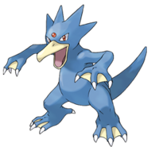

Golduck (ゴルダック Golduck en japonés) es un Pokémon de tipo agua introducido en la primera generación. Es la evolución de Psyduck.
Evoluciones de Golduck

Su nombre proviene de las palabras gold, que significa oro, ya que en Japón el oro es considerado como un metal que atrae la suerte y aumenta las capacidades psíquicas, y duck, que significa pato.
Su nombre francés, Akwakwak, proviene de la palabra aqua (agua) y la onomatopeya del graznido de un pato, couac.
Golduck al igual que Psyduck está basado en un pato, de aspecto mucho más grande y ahora con una tonalidad azul. En su cabeza posee cuatro crestas en la parte superior, una pequeña esfera en su frente, la cual brilla misteriosamente permitiéndole usar poderes telequinéticos. Posee un gran pico de una tonalidad clara. Tanto en sus brazos como en sus patas, tiene dedos palmeados recubiertos de una membrana interdigital que le ayudan a nadar a gran velocidad. Este Pokémon también tiene una larga cola que le ayuda a nadar con gran destreza.
Este Pokémon suele ser visto nadando en lagos y ríos, a veces es confundido con el monstruo japonés Kappa. La forma de su cuerpo y sus extremidades palmeadas hacen que la velocidad de nado de Golduck supere a la de cualquier nadador humano con facilidad, se dice que inclusive es el nadador más rápido entre los Pokémon. Se le ha visto nadar sin esfuerzo en turbulentas aguas durante las tormentas e incluso ha rescatado náufragos en alta mar. Le gusta entrenar nadando junto a nadadores profesionales, pudiendo nadar por dos días seguidos sin descanso. Gusta de sumergirse en el agua en busca de algún Pokémon pez, pudiendo paralizar incluso al más veloz de estos Pokémon, una vez que lo ha capturado, se dirige a la orilla para darse un banquete con su presa.
Antiguamente este Pokémon era cazado indiscriminadamente, pues la gente tenía la creencia que que la parte roja de su frente le iba a dar poderes a quien la poseyera. Hay una leyenda que cuenta que Golduck arrastraba al fondo de las aguas a la gente que contaminaba los ríos donde habita. Este Pokémon habita cualquier manto acuífero, prefiere las aguas calmas de los ríos y lagos, pero también puede vérsele en el mar, se le suele ver con mayor facilidad en estos lugares al anochecer.
Página creada por Luis Felipe Restrepo y Daniel Felipe Gutierrez
Información extraida de: Golduck. (s. f.). WikiDex. Recuperado 5 de noviembre de 2022, de https://www.wikidex.net/wiki/Golduck